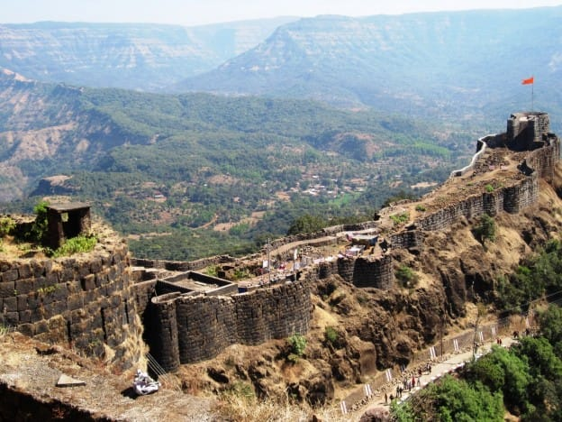
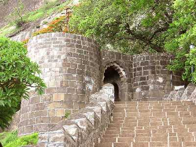

शिवनेरी किल्ला
Location : Click Here For Google Map
- माहिती
- शिवनेरी किल्ला महाराष्ट्र राज्यातील जुन्नर शहराजवळ स्थित ऐतिहासिकदृष्ट्या महत्त्वाचा किल्ला आहे. या किल्ल्याचे सर्वात महत्त्वाचे वैशिष्ट्य म्हणजे इथेच छत्रपती शिवाजी महाराजांचा जन्म १६३० साली झाला. किल्ला मराठा इतिहासातील एक अत्यंत महत्त्वपूर्ण किल्ला आहे, जो प्रमुख व्यापार मार्गांचे संरक्षण करण्यासाठी आणि मराठा साम्राज्याला एक मजबूत ठाणे प्रदान करण्यासाठी बांधला गेला होता. किल्ल्याची वास्तुकला त्याच्या मजबूत भिंती, दरवाजे आणि मंदिरे यासाठी ओळखली जाते, ज्यामध्ये शिवाजी महाराजांच्या आई जिजाबाईंच्या नावाने एक मंदिर आहे. किल्ल्यापासून भोवतालच्या परिसराचे मनोहर दृश्य दिसते, आणि त्याची रचना मराठा सैन्याच्या कर्तृत्वाचे एक उत्कृष्ट उदाहरण आहे. किल्ल्याचे लष्करी महत्त्व आणि इतिहास याशिवाय, शिवनेरी किल्ला ट्रेकर्स आणि इतिहास प्रेमींसाठी एक लोकप्रिय पर्यटनस्थळ आहे. हा किल्ला सस्यद्रव्यांनी व सजीव प्रजातींनी वेढलेला आहे, ज्यामुळे तो निसर्गप्रेमींसाठी एक आदर्श स्थान बनवतो. पर्यटक किल्ल्याच्या शिखरावर चढून, अविस्मरणीय दृश्यांचा आनंद घेऊ शकतात आणि त्याच्या मंदिरे व ऐतिहासिक संरचनांचे अन्वेषण करू शकतात. शिवनेरी किल्ला मराठा वारशाचा एक अत्यंत सन्मानित प्रतीक आहे आणि त्याचा समृद्ध इतिहास भविष्यकाळासाठी जतन करण्याचे प्रयत्न सुरू आहेत.
Explore the historical beauty

